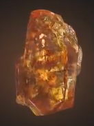
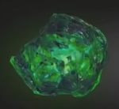
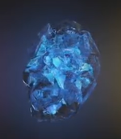
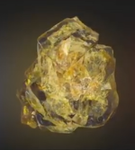
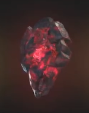
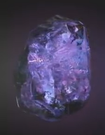

| Soul |
Orange |
The Soul Stone ranks as possibly the most dangerous of all the
Infinity Stones, with it holding a special standing among the
others. The sacrifices for the Stone are
permanent and irreversible, as not even the omnipotent
combination of the Six Stones could resurrect them. The Soul
Stone has the ability to manipulate the soul, the essence that
makes up an individual, and has the ability to resurrect and
conjure the spiritual representation of the people who are
dead. |
 |
| Time |
Green |
As the Infinity Stone that represents, describes and governs
over the flow of time, the Time Stone is among the most powerful
artifacts in all existence. Due to its power, it cannot be
held and used by anyone not powerful enough to withstand it,
thus forcing Agamotto to create the Eye of Agamotto as a
container to allow other sufficiently advanced sorcerers to
wield it. |
 |
| Space |
Blue |
As the Infinity Stone that represents and governs over space,
the Space Stone grants the wielder absolute control over space itself.
It is primarily used to open portals to other locations and can even allow interdimensional travel.
As one of the six Infinity Stones, the Space Stone ranks as among the most powerful artifacts in the universe,
with Black Widow saying it has the power to wipe out an entire planet. |
 |
| Mind |
Yellow |
As the Infinity Stone that represents and governs the fabric of
mind, the Mind Stone grants whoever holds it complete control
over the hearts and minds of others. Like with all the other
Infinity Stones, it is among the most powerful artifacts in
all existence. |
 |
| Reality |
Red |
As the Infinity Stone that represented and governs over reality,
the Reality Stone granted its user absolute control over reality
itself. However, like all other Infinity Stones, due to it being
the most powerful artifact in existence, it can only be wielded
by beings of sufficient power and inside beings of no powers,
it will inevitably kill them, as evidenced with Jane Foster.
|
 |
| Power |
Purple |
As the Infinity Stone that embodies both the sustaining and
destructive forces of the universe, the Power Stone grants its
wielder tremendous energy manipulation capabilities. Due to the
amount of energy the Power Stone releases, it is the most
destructive out of all the Infinity Stones in terms of raw
power. |
 |